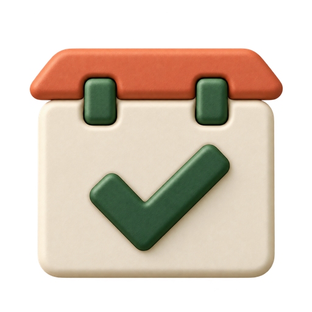
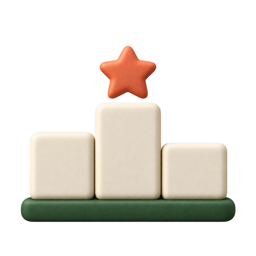
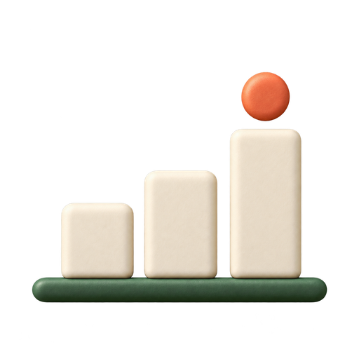
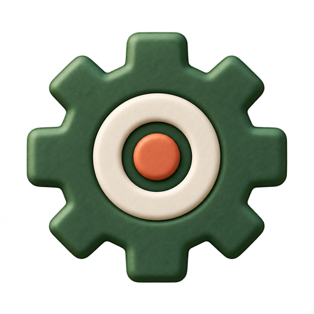

Green Theme DNA
Balkan Clay Glyphs
Slobodni glineni simboli bez kvadratne pločice: šumsko zelena, krečnjačka ivory i terakota ostaju prepoznatljiv DNK teme.

Dnevni izazov

Top lista

Statistika

Podešavanja
Pravila
Produkcijska veličina u meniju · nepromenjene klik-zone 55 × 55 px